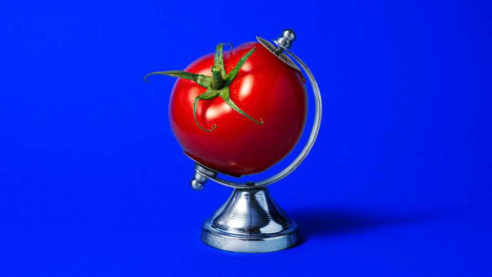

Heinz tomato ketchup and the sweet taste of market dominance
The condiment that conquered the world was created 150 years ago
July 2nd 2026

EATING HABITS have changed a lot in the past 150 years. Offal and jellied eels rarely make it onto Britons’ and Americans’ plates any more. But one food product has remained a staple since it first hit shelves in 1876: Heinz tomato ketchup.
Heinz says it sells over 650m bottles of the red stuff every year (meaning that more than 1,200 bottles land in shopping baskets every minute). Its factories process enough tomatoes each day to fill an Olympic swimming pool. The ubiquity of its ketchup is partly a matter of taste and partly a triumph of marketing.
Versions of the condiment long predated Henry J. Heinz, a son of German immigrants to America. Ketchup is probably derived from ke-tsiap, a sauce made in Asia from fermented fish. It is thought British and Dutch traders encountered the salty, savoury sauce in the late 17th century and tried in vain to recreate it at home. Recipes often used mushrooms, but others made ketchup with plums or walnuts. (In the 1800s, the spelling “catsup” was also used.)
It was in the early 19th century that Americans developed a taste for tomato ketchup, plopped on eggs and corned beef hash or liver. Early versions of the sauce, however, were watery and spoiled easily. Manufacturers would package their sauces in coloured bottles to hide evidence of bacteria or mould; they would also use preservatives such as sodium benzoate and dyes made from coal tar. Many consumers, even then, wanted to eat clean.
So Heinz developed a ketchup that would not go off quickly, but was free from preservatives (or, as an advert pithily put it, “NOT drugged”). He used ripe tomatoes for a better flavour and colour, and vinegar to inhibit microbes. Crucially, Heinz sold his product in glass bottles, thereby signalling its higher quality.
“The beauty of Heinz is that it’s not trying to be complicated,” says Claire Dinhut, author of “The Condiment Book”: “It’s the perfect balance of sweet and umami and tangy.” That sweetness pairs well with salty foods; the tanginess cuts through greasy dishes. Cookbooks aver that it is so versatile it can be used in curries, fish dishes and breads. But for many Heinz ketchup is associated with the comfort food of childhood—chicken nuggets and chips—and (for Americans) July 4th celebrations.
Nostalgia helps explain Heinz’s staying power. Marketing has entrenched its position. Heinz is among the best-known brands globally: according to YouGov, a pollster, 100% of Britons and 97% of Americans know it. By advertising itself as the default ketchup, Heinz has turned that message into a self-fulfilling prophecy. Even today, when there are umpteen other ketchups on the market—including cheaper and artisan varieties—many shoppers still believe that “It has to be Heinz.” ■